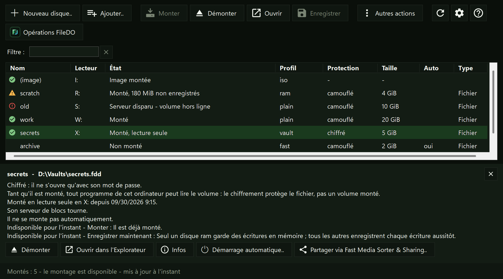
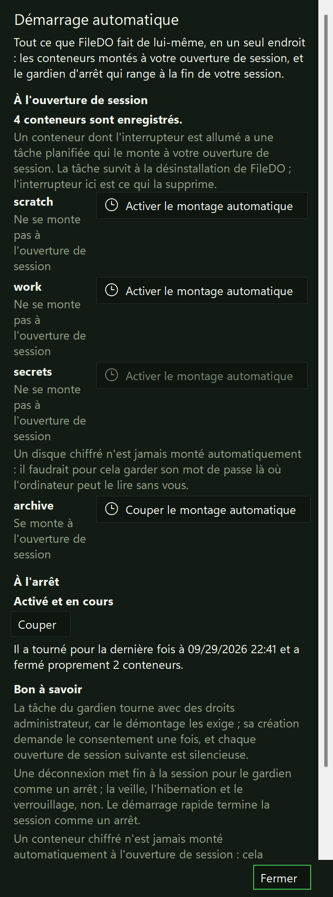
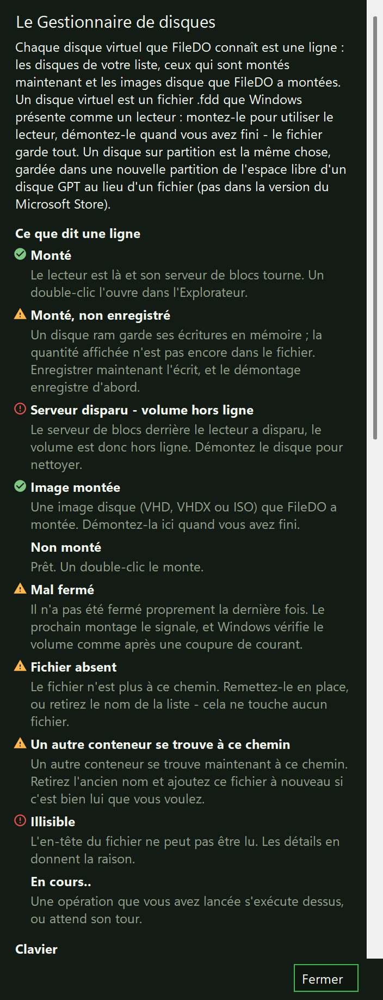
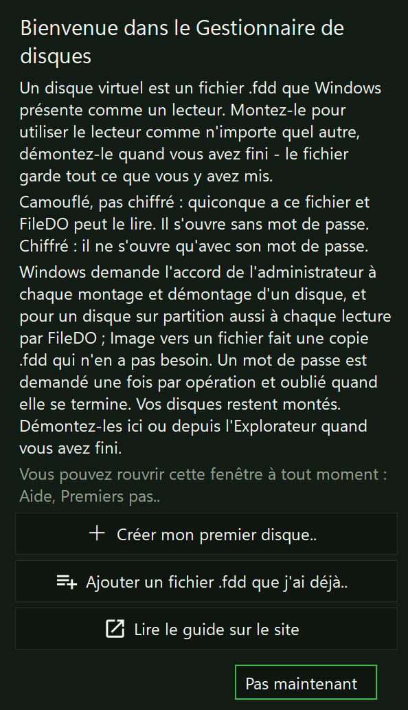

Créer
Un nouveau conteneur de 20 Go. Un fichier existant n’est jamais écrasé. Le premier montage formate le volume en NTFS.
filedo vd new work.fdd 20G
Guide · disques virtuels
Un conteneur .fdd est un fichier ordinaire qui contient un volume entier. Monté, c’est une lettre de lecteur comme une autre ; non monté, c’est un fichier que vous pouvez copier, sauvegarder et lire avec FileDO seul, sans le monter. Le format est publié en entier sous la forme du contrat FDD-FORMAT, et ce que doit faire un programme qui en lit ou en écrit un sous la forme de FDD-BEHAVIOUR, de sorte que les données ne dépendent pas de la survie de FileDO.
Un nouveau conteneur de 20 Go. Un fichier existant n’est jamais écrasé. Le premier montage formate le volume en NTFS.
Sur la première lettre libre ; ro pour la lecture seule, as X: pour une lettre de votre choix. Windows demande l’accord d’un administrateur.
Tout ce qui est en attente est enregistré et le conteneur est marqué comme fermé proprement avant que la lettre disparaisse.
plain grandit à mesure que les données sont écrites. fast prend tout de suite la taille entière, si bien qu’une écriture n’attend jamais que le fichier grossisse. ram garde le volume en mémoire tant qu’il est monté et l’enregistre dans le fichier toutes les quelques secondes : un plantage ou une coupure de courant fait perdre ce qui a été écrit depuis le dernier enregistrement. vault est toujours chiffré, il exige donc toujours un mot de passe. Tout profil auquel on donne un mot de passe (p: ou l’invite) est chiffré ; sans mot de passe, il est camouflé, pas chiffré.
Ces trois commandes n’exigent ni droits d’administrateur, ni iSCSI, ni réseau, et n’écrivent rien dans le conteneur. Elles fonctionnent dans toutes les versions, y compris celle du Microsoft Store.
Profil, taille, camouflé ou chiffré, fermé proprement ou non, et date du dernier enregistrement complet. Aucun mot de passe n’est nécessaire.
Les en-têtes, la carte et chaque cluster alloué ; un dommage donne le code de sortie 4. Le format 1.0 ne garde aucune somme de contrôle des données : elles sont donc lues, pas vérifiées.
raw donne une image disque brute, vhd un VHD fixe que Windows attache tout seul, sans FileDO. L’image d’un conteneur chiffré n’est pas chiffrée. Dans cette version, les fichiers isolés ne sortent que par le montage.
Sans mot de passe, un conteneur est camouflé, pas chiffré. Le camouflage soustrait le volume à un coup d’œil rapide et aux outils qui cherchent des images disque - mais pas à quiconque a le fichier et FileDO. FileDO ne l’appelle jamais chiffrement.
Avec un mot de passe, un conteneur est chiffré : sans lui, le fichier est illisible. Il n’y a aucune récupération - un mot de passe oublié est un conteneur perdu. pass change le mot de passe sans réécrire les données ; les copies du fichier faites auparavant s’ouvrent donc toujours avec l’ancien.
Un mot de passe n’est jamais retiré sur place : un nouveau mot de passe vide est refusé. À la place, clone avec nopass écrit une nouvelle copie camouflée - quiconque a ce fichier et FileDO la lit - et l’original chiffré reste tel quel.
Le chiffrement protège le fichier, pas un volume monté : tant qu’il est monté, tout programme que vous lancez peut le lire, comme n’importe quel lecteur. ram avec un mot de passe : Windows peut paginer cette mémoire, et des données non chiffrées peuvent donc arriver dans le fichier d’échange. Un nouveau volume est créé avec l’indexation désactivée ; mount noscan exclut le fichier conteneur de l’analyse de Microsoft Defender pendant toute la durée du montage - les fichiers du volume lui-même restent analysés.
filedo.exe. Le serveur n’écoute que sur 127.0.0.1 : rien ne quitte cet ordinateur et le conteneur ne passe jamais par un réseau - sauf si vous choisissez de le partager (voir plus bas).
mount, unmount, save, format, chkdsk et vd auto demandent à Windows l’accord d’un administrateur - pour l’étape de l’initiateur, et pour rien d’autre : le mot de passe n’y va jamais, et le serveur de blocs lui-même ne tourne jamais avec des droits élevés. Un lot n’affiche jamais cette demande - lancez-le depuis une console administrateur. Si le service Initiateur iSCSI de Microsoft ne peut pas être utilisé, ou si l’accord n’est pas donné, l’exécution se termine avec le code de sortie 7 et rien n’est monté.
mount, unmount, save, format, chkdsk, vd auto, vd guard et vd register s’y terminent donc avec le code de sortie 6 (non pris en charge). info, verify, export, compact, grow, seal, clone, pass, destroy, vd new, vd list, vd status, vd add et vd forget y fonctionnent aussi. Pour monter, installez le setup ou la version portable depuis GitHub.
filedo X: unmount.
Uniquement à l’état démonté : un conteneur monté est refusé avec le code de sortie 8, et aucun indicateur ne contourne cette vérification. grow 40G agrandit le disque - le volume qu’il contient est étendu au montage suivant (Gestion des disques, Étendre le volume). compact rend au lecteur l’espace inutilisé du fichier. seal écrit une copie en lecture seule pour toujours, clone une copie modifiable avec sa propre identité. format efface le volume (fs ntfs ou fs exfat), destroy supprime le fichier conteneur, et avec wipe l’écrase d’abord. Les deux posent d’abord la question ; force saute la question, jamais la vérification, et un lot sans force ne les exécute pas. chkdsk vérifie le volume d’un conteneur non monté sans rien écrire ; chkdsk fix y lance chkdsk /f - la réparation d’un conteneur qui n’a pas été fermé proprement - en demandant d’abord.
Codes de sortie d’une commande de conteneur : 0 terminé, 2 refusée telle qu’écrite, 3 mauvais mot de passe, 4 endommagé, 5 échec de lecture ou d’écriture, 6 non pris en charge, 7 transport indisponible, 8 occupé. Un lot garde ses 0/1/2.
Un disque virtuel peut aussi vivre dans une partition plutôt que dans un fichier. FileDO crée une nouvelle partition GPT dans l’espace non alloué d’un disque et la remplit, entière, d’un seul conteneur ; rien n’est modifié hors de cet espace libre - FileDO ne convertit jamais une partition existante, ne la redimensionne jamais et n’y écrit jamais. Disques GPT uniquement : les disques MBR, dynamiques, les espaces de stockage (Storage Spaces), les disques iSCSI, amovibles et USB sont refusés, et vd disks en donne la raison pour chacun. Vous gagnez un disque qu’aucun système de fichiers hôte ne porte, auquel Windows ne donne pas de lettre et qu’il ne propose pas de formater, avec son espace réservé ; vous ne gagnez pas de vitesse.
Chaque disque, ses partitions et ses zones libres ; chaque zone est utilisable ou non, avec la raison, et une zone utilisable s’accompagne de sa ligne create prête à l’emploi. Sans droits d’administrateur.
<disk> est disk:{GUID} ou le numéro donné par vd disks ; size est max ou une taille comme 40G (arrondie vers le bas au MiB, 64 MiB au minimum). La confirmation montre le disque, la zone et ses voisines. Le profil par défaut est fast. Un seul accord administrateur ; le premier montage formate le volume en NTFS.
Copie la partition dans un nouveau fichier .fdd ordinaire, qui se lit sans droits d’administrateur et se monte, se clone et se scelle comme n’importe quel autre. Un disque monté est refusé ; la partition reste inchangée.
Un disque monté est refusé. Tapez le nom du disque pour confirmer ; wipe écrase d’abord la partition. Seule une partition dont il est prouvé qu’elle appartient à FileDO est supprimée, et l’espace redevient non alloué.
Un disque sur partition se désigne par son nom ou par son localisateur fdpart:{GUID}, jamais par un chemin : filedo vd mount data. mount, unmount, save, info, verify, export, pass, seal, clone, vd auto et le gardien d’arrêt fonctionnent comme pour un fichier ; compact et grow non (sa taille est fixe), et le partager via Fast Media Sorter est refusé pour l’instant. vd adopt fdpart:{GUID} as data enregistre une partition FileDO que ce PC ne connaît pas (un disque venu d’un autre PC) ; vd forget retire le nom et laisse la partition sur son disque. Un disque refusé se termine avec le code de sortie 6, un accord refusé avec le code de sortie 7, et une disposition modifiée depuis son affichage dans la liste avec le code de sortie 5 - sans que rien ne soit modifié.
info, verify, export, pass, seal, clone et vd image demandent eux aussi l’accord à Windows. vd image lève ce besoin : le fichier qu’il écrit est un .fdd ordinaire que chaque chemin de lecture ouvre sans droits d’administrateur.
.fdd sur NTFS. Choisissez-le pour l’espace fixe et séparé, pas pour la vitesse.
fast écrase l’espace libre ; plain et vault non. Ce que l’espace libre contenait avant reste dans les clusters inutilisés d’un disque sur partition plain ou vault jusqu’à ce que le volume écrive par-dessus ; fast écrase toute la partition à sa création.
diskmgmt.msc) affiche toujours la partition et peut la supprimer. La supprimer là supprime le disque qu’elle contient, sans aucune question sur son contenu. Le vd destroy de FileDO est le moyen sûr : il refuse un disque monté, vous demande de taper le nom du disque et ne supprime qu’une partition dont il a prouvé qu’elle appartient à FileDO.
vd disks le dit et toute commande de partition se termine avec le code de sortie 6 ; utilisez le setup ou la version portable depuis GitHub.
Le programme d’installation propose le type .fdd comme fonctionnalité à part, « Disk container files (.fdd) », que vous pouvez décocher (DiskContainerIntegration dans ADDLOCAL). Sans le programme d’installation, filedo vd register écrit la même chose - pour cet utilisateur, ou avec -all-users pour toute la machine - et filedo vd unregister la retire. Les trois entrées ouvrent la fenêtre FileDO. Un double-clic monte : un conteneur camouflé fermé proprement tout de suite ; un conteneur chiffré demande son mot de passe dans la fenêtre, jamais sur une ligne de commande ; un conteneur qui n’a pas été fermé proprement le dit d’abord, avec l’heure de son dernier enregistrement complet, et attend ; un conteneur déjà monté ouvre son lecteur. Le menu contextuel ajoute « Mount read-only » et « Unmount » ; sous Windows 11, ils se trouvent sous « Afficher d’autres options ». Dans la fenêtre, le groupe Disques a une page par opération, et le Gestionnaire de disques liste tous les disques au même endroit. La version du Microsoft Store n’a aucune entrée de menu, mais un double-clic sur un .fdd ouvre la fenêtre FileDO sur ce conteneur, et la fenêtre dit clairement que cette version ne peut pas monter.
La fenêtre FileDO a une seconde fenêtre pour les disques virtuels : le Gestionnaire de disques. C’est l’interface graphique de filedo.exe, pas un nouveau programme - filedo_win.exe ne fait qu’ouvrir une autre fenêtre. Il réunit tous les disques virtuels au même endroit, une ligne par disque : les disques de votre liste, ceux qui sont montés maintenant et les images disque (VHD, VHDX, ISO) que FileDO a montées. Il se tient à jour sans actualisation manuelle - un montage fait ailleurs apparaît en quelques secondes.

L’état est écrit en toutes lettres, à côté d’une icône : « Monté » ; « Monté, lecture seule » ; « Monté, 180 MiB non enregistrés » (un disque ram - la quantité pas encore dans le fichier) ; « Serveur disparu - volume hors ligne » ; « Image montée » ; « Fichier absent » ; « Un autre conteneur se trouve à ce chemin » ; « Illisible » ; « Mal fermé » ; « Non monté ». Pour un disque qui n’a pas été fermé proprement, le menu de la ligne propose « Vérifier le volume » (lecture seule) et « Réparer le volume » - soit chkdsk et chkdsk /f ; la réparation demande d’abord, et la ligne de fin dit ce que chkdsk a trouvé. Un disque partagé dans Fast Media Sorter l’indique dans le même mot : « Ouvert dans FMS » (FMS l’a ouvert pour d’autres, et FileDO ne le monte pas) ou une mention comme « partagé dans FMS, fermé ».
Chaque bouton de la barre d’outils porte une icône : Nouveau disque.., Ajouter.., Monter, Démonter, Ouvrir (dans l’Explorateur), Enregistrer (écrit tout de suite un disque ram dans son fichier), Autres actions, Actualiser, Aide et Fenêtre principale. Une ligne de filtre se trouve dessous : une étiquette, un champ et une croix qui l’efface. Sous la liste, un volet de détails décrit le disque choisi en phrases, avec les boutons qui s’y appliquent ; il se ferme par une croix à son bord droit et revient depuis une fine barre « Afficher les détails » ou depuis le menu Autres actions. Un bouton inutilisable est grisé, et son info-bulle ainsi que le volet de détails disent pourquoi. La version du Microsoft Store ne peut jamais monter : elle masque donc les commandes de montage au lieu de les griser.
Un double-clic ou Entrée monte un disque au repos et ouvre le lecteur d’un disque monté - il ne démonte jamais. Un clic droit sur une ligne ouvre son menu : les actions rapides d’abord, celles confiées à une page de tâche sous un séparateur, Formater et Détruire en dernier et dans la couleur de danger. Faites glisser des fichiers .fdd sur la liste pour les ajouter ; faites glisser un .vhd, .vhdx ou .iso pour monter l’image après une confirmation. Un clic avec Ctrl ou Maj sélectionne plusieurs disques.
Une opération avec des paramètres, ou sans retour possible - Nouveau disque, Exporter, Compacter, Agrandir, Copie scellée, Cloner, Changer le mot de passe, Formater, Détruire - ouvre sa propre page de tâche dans la fenêtre principale, le conteneur étant déjà choisi. Le gestionnaire ne construit jamais lui-même ces lignes de commande, et Formater et Détruire gardent sur la page de tâche la confirmation à saisir.
Le démarrage automatique a deux moitiés, réunies dans un seul dialogue : Démarrage automatique.. dans le Gestionnaire de disques (Autres actions, le menu d’un disque ou son volet de détails). La première moitié se joue à l’ouverture de session : chaque conteneur enregistré a un interrupteur qui crée ou supprime une tâche planifiée le montant à l’ouverture de votre session (vd auto). La seconde se joue à l’arrêt : le gardien d’arrêt (vd guard), une tâche par compte, qui à la fin de la session enregistre les disques ram modifiés et démonte chaque conteneur monté, de sorte que chacun est fermé proprement et que l’ouverture de session suivante ne dit pas « Mal fermé ».

Un conteneur chiffré n’est jamais monté automatiquement à l’ouverture de session : cela exigerait son identifiant stocké là où la machine peut le lire, et FileDO n’en stocke aucun. La fin de session, pour le gardien, est un arrêt, un redémarrage et une déconnexion ; la veille, l’hibernation et le verrouillage n’en sont pas (le démarrage rapide termine la session comme un arrêt). Pendant que le gardien enregistre un disque ram, Windows affiche « FileDO is saving your RAM disk.. » - et « Arrêter quand même » reste toujours votre issue. Ce qui n’a pas fini n’est pas caché : le rapport du dernier passage est à l’écran dans le dialogue Démarrage automatique, et dans la console avec filedo vd guard status.
filedo vd guard on
crée la tâche (en demandant une fois l’accord d’un administrateur) ; vd guard off la supprime et ne touche aucun disque ; vd guard run est le guetteur lui-même, que la tâche démarre à l’ouverture de session ; vd guard status donne l’état et le dernier passage en trois lignes. Les deux tâches survivent à une désinstallation de FileDO - les interrupteurs ici et dans le dialogue Démarrage automatique sont ce qui les supprime.
Les mêmes touches figurent dans l’aide du gestionnaire lui-même, que F1 ouvre.
| Touches | Ce que ça fait |
|---|---|
| Ctrl+N | Nouveau disque.. |
| Ctrl+Shift+O | Fenêtre principale |
| Ctrl+O | Ajouter.. |
| Ctrl+M | Monter |
| Ctrl+Shift+M | Monter en lecture seule |
| Ctrl+U | Démonter |
| Ctrl+E | Ouvrir dans l’Explorateur |
| Ctrl+S | Enregistrer maintenant |
| Ctrl+I | Infos |
| Ctrl+Shift+V | Vérifier |
| Enter | Monter un disque au repos, ou ouvrir le lecteur d’un disque monté |
| Del | Retirer de la liste (jamais Détruire) |
| Ctrl+C | Copier le chemin |
| Ctrl+A | Choisir tous les disques de la liste |
| Menu / Shift+F10 | Ouvrir le menu du disque choisi |
| F5 | Actualiser |
| Ctrl+F | Aller au champ de filtre |
| Esc | Effacer le filtre |
| F1 | Ouvrir l’aide |
Ctrl+Shift+D ouvre le Gestionnaire de disques.
filedo_win.exe --disks et ouvre directement le gestionnaire, sans fenêtre principale.
--disks.
Les deux fenêtres se renvoient l’une à l’autre. Le bouton « Fenêtre principale » du gestionnaire, avec la marque FileDO, ramène la fenêtre principale de FileDO au premier plan - et l’ouvre si le gestionnaire a été lancé seul. Le bouton « Gestionnaire de disques » de la fenêtre principale ouvre le gestionnaire, ou le ramène au premier plan.
F1 ouvre la fenêtre d’aide : ce que dit une ligne, le tableau des touches, quelques points bons à savoir et des liens. Le bouton Aide ouvre un menu : « Aide et raccourcis clavier », « Premiers pas.. », et des liens vers « Guide : disques virtuels », « Tous les guides », « Site de FileDO », « Documentation et code source » sur GitHub et « Signaler un problème ». Un lien n’est suivi que si vous cliquez dessus ; rien n’est récupéré de lui-même.
La première fois que le Gestionnaire de disques s’ouvre, il affiche une seule fois « Bienvenue dans le Gestionnaire de disques ». Il dit ce qu’est un disque virtuel et sépare les deux promesses : « Camouflé, pas chiffré : quiconque a ce fichier et FileDO peut le lire. Il s’ouvre sans mot de passe. » « Chiffré : il ne s’ouvre qu’avec son mot de passe. » Il dit que Windows demande l’accord d’un administrateur à chaque montage ou démontage d’un disque, et que vos disques restent montés quand la fenêtre se ferme. Il propose quatre réponses : « Créer mon premier disque.. », « Ajouter un fichier .fdd que j’ai déjà.. », « Lire le guide sur le site » et « Pas maintenant » - une vraie réponse, qui laisse une fenêtre utilisable. Il se rouvre depuis Aide, Premiers pas.., et une liste vide montre les mêmes façons de commencer.


Le format et les règles de sécurité sont ceux décrits plus haut. Un montage survit à la fenêtre, et fermer la fenêtre ne démonte jamais. Formater et Détruire gardent sur la page de tâche la confirmation à saisir. Les deux mots gardent leur sens : sans mot de passe, un conteneur est camouflé, pas chiffré ; avec un mot de passe, il est chiffré.